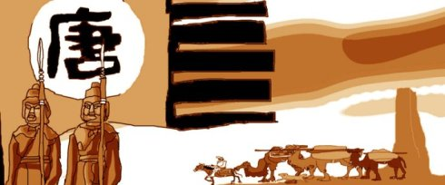

张骞出使西域后，汉朝开始策动对西域的控制。公元前60年设立了汉朝对西域的直接管辖机构——西域都护府。以汉朝在西域设立官员为标志，丝绸之路这条东西方交流之路开始进入繁荣的时代。

唐朝时，中国政府借击破突厥的时机，一举控制西域各国，并设立安西四镇作为中国政府控制西域的机构，打通了天山北路的丝路分线，将西线打通至中亚。这一时期东罗马帝国、波斯（7世纪中叶后阿拉伯帝国取代了波斯的中亚霸权）保持了相对的稳定，令这条商路再度迎来了繁荣时期。
中国倡导的新丝绸之路计划(一带一路)，将惠及整个亚欧大陆乃至非洲大陆。